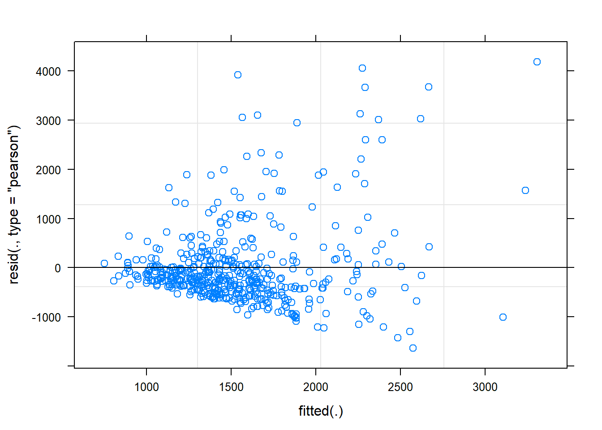
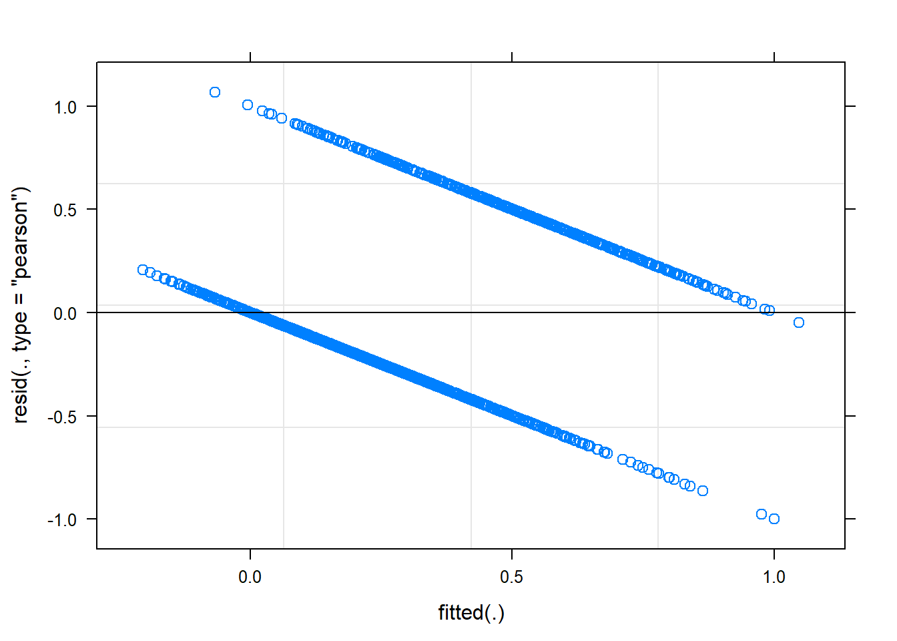
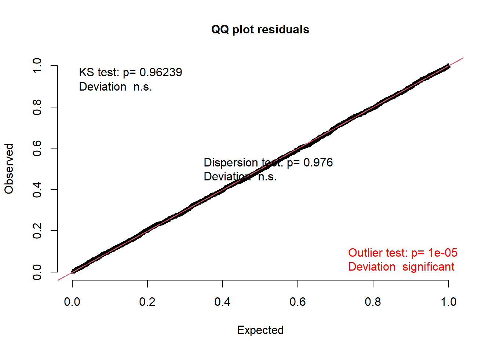

Introduction to Mixed Effects Models
Emma James
Work in progress!
Overview
Questions
- What is a mixed effects model?
- Why might I want to use a mixed effects model?
- How do I incorporate different random intercepts into my model?
- How do I incorporate random slopes into my model?
- What random effects should I include?
- How can I model accuracy data?
- How do I interpret model output?
- How can I compare models?
- What is non-convergence and do I deal with it?
Objectives
- Describe how mixed effects models differ from standard (non-hierarchical) regression models
- Describe the difference between fixed and random effects
- Fit a linear mixed effects model with random intercepts
- Fit a linear mixed effects model with random slopes
- Fit a binomial mixed effects regression model
- Compare the fit of two different mixed effects models
- Interpret the output of a mixed effects model
- Consider different approaches to model fitting and convergence
What is a mixed effects model?
In our regression model, we only considered one source of variance - the random sample of participants that we tested from the population. In mixed effects models, we can consider more than one source. They are sometimes referred to as hierachical models because we can nest sources of variance within each other.
For example, researchers who collect data from children in school might want to model that individual children are clustered within classes, and those classes are in turn clustered within and between schools. We need multi(ple)-levels of variance to deal with this structure.
Alternatively—in a psychology experiment—we might want to consider the sample of stimuli that we incorporated (from all possible stimuli that we could have used). Just as we have some participants that show higher performance than others, we will likely have some items that show higher performance than others. This variance is lost in a traditional analysis, as we have to average over all items to meet the assumption of independent observations (i.e., we can enter only one score per participant).
Mixed effects models can be broken down into two parts: the fixed effects and the random effects.
Fixed effects
Fixed effects are your key predictors of interest. They are the same as you would use in a normal regression model, and can be continuous or categorical as we saw in the last part of the session.
Random effects
Random effects have to be categorical - they are modelling clusters of observations in the dataset, so each observation belongs to a group or sub-sample of the data. So the clusters could be the classes that children are in, or the participant ID itself if we collected multiple trials from the same participant.
Random effects can be further broken down into random intercepts and random slopes. There is an excellent visualisation of random intercepts and random slopes here (Michael Freeman, University of Washington).
Random intercepts
If we fit the model such that the intercept represents average performance (as is the case when we have centred our predictors), then random intercepts model the variance of each group’s average performance.
We might expect that children within a class are more likely to have similar scores to each other, and more different scores to children from another class.
Similarly, we might expect that an individual’s performance on a given trial might relate to their performance on the other trials.
Random slopes
Random slopes allow us to model the way in which our sub-groups might not only vary in their average performance, but also in their response to the fixed effects of interest.
Benefits (and costs)
There are some great reasons to use mixed effects models, including:
- Can make use of all the data you collected without breaking assumption of independence
- Better able to capture variation in the data (averaging always loses some)
- Can easily incorporate a range of continuous and categorical predictors
- Allow us to make inferences beyond our specific sample of participants and specific sample of stimuli (cf. F1 and F2 analyses in language research)
But there are some challenges, including:
- Needing to fit them in R! (although the syntax itself is very simple)
- Appropriately checking and dealing with statistical assumptions
- Relatively complex - can encounter convergence issues
- Current lack of standardisation in both conducting and reporting the analyses
Preparing the data
Loading the data
We will be working with the same dataset as in the regression modelling introduction. This time, we’ll be working directly with the long dataframe that we read in. You might still have it in your environment, but if not then you can re-load it as follows.
library(tidyverse)
pn_long <- read_csv("https://raw.githubusercontent.com/emljames/YSJ_R_workshop/master/data/AMPM_subset.csv")Formatting the predictors
As with the standard regression model, the first step is to make sure that our predictors are as we would want. You can repeat the steps from the last session to do this, just using the pn_long dataframe now rather than our participant averages.
Exercise
- Effect code the
sleep_wakepredictor, such that “wake” is -1 and “sleep” is +1. Remember, you might need to re-format the variable as a factor! - Effect code the
sessionpredictor, such that they are similarly coded to -1 and 1. - Center and scale the
vocabpredictor, storing it asvocab_s.
# Q1 - Sleep-wake predictor
pn_long$sleep_wake <- as.factor(pn_long$sleep_wake)
contrasts(pn_long$sleep_wake) <- c(-1, 1)
contrasts(pn_long$sleep_wake)## [,1]
## sleep -1
## wake 1# Q2 - Session predictor
pn_long$session <- as.factor(pn_long$session)
contrasts(pn_long$sleep_wake) <- c(-1, 1)
contrasts(pn_long$sleep_wake) ## [,1]
## sleep -1
## wake 1# Q3 - Vocabulary predictor
pn_long$vocab_s <- scale(pn_long$vocab, center = TRUE, scale = TRUE)Fitting a linear mixed effects model
Each participant in our dataset was trained on 24 new words. These were actually 2 lists of 12 words - they learned one list for each of the sleep/wake conditions, and the order was counterbalanced across participants. So rather than computing average scores like we did in the last chapter, we want to include all these datapoints for each participant.
This means that we have two types of random effect in the dataset:
- Participant
ID- we have multiple observations (words) collected from the same person itemtrained - we have multiple responses (participants) for each word
One of the most frequently used packages for mixed effects modelling is lme4. For linear models, lme4 doesn’t provide significant tests by default. This is in part because there are a few different ways that one could obtain p-values from these models. You can read about these further down the line if you choose (e.g., Luke, 2016. However, for today we’ll also load lmerTest - a handy package that does this for us.
library(lme4)
library(lmerTest) # Note, we might have to install this first! Incorporating random intercepts
Let’s start with the response time data this time. We use the lmer() function to fit a linear mixed effects regression. The first argument should look familiar from the last chapter: we enter the formula to specify our outcome measure (RT) and predictors of interest (now “fixed effects”, sleep_wake*session). The last part should look familiar too - we need to tell it where to find the dataset.
mem_rt_1 <- lmer(RT ~ sleep_wake*session + (1|ID) + (1|item), data = pn_long)…then you can see we have two extra bits to specify random intercepts. (1|ID) specifies that we will model varying intercepts per participant ID, and (1|item) specifies varying intercepts per word item. The 1 is R notation for the intercept - we could specify 1 in our fixed effects if we wanted, but there’s no need as it’s automatically assumed.
Let’s call summary() on our fitted model to see the results:
summary(mem_rt_1)## Linear mixed model fit by REML. t-tests use Satterthwaite's method ['lmerModLmerTest']
## Formula: RT ~ sleep_wake * session + (1 | ID) + (1 | item)
## Data: pn_long
##
## REML criterion at convergence: 8075.2
##
## Scaled residuals:
## Min 1Q Median 3Q Max
## -1.4294 -0.5214 -0.2590 0.1489 5.2558
##
## Random effects:
## Groups Name Variance Std.Dev.
## ID (Intercept) 88679 297.8
## item (Intercept) 80437 283.6
## Residual 769982 877.5
## Number of obs: 492, groups: ID, 34; item, 24
##
## Fixed effects:
## Estimate Std. Error df t value Pr(>|t|)
## (Intercept) 1780.72 102.68 52.96 17.343 < 2e-16 ***
## sleep_wake1 20.48 61.67 467.85 0.332 0.73996
## session2 -213.29 81.34 449.98 -2.622 0.00904 **
## sleep_wake1:session2 164.65 81.59 450.29 2.018 0.04418 *
## ---
## Signif. codes: 0 '***' 0.001 '**' 0.01 '*' 0.05 '.' 0.1 ' ' 1
##
## Correlation of Fixed Effects:
## (Intr) slp_w1 sessn2
## sleep_wake1 -0.078
## session2 -0.450 0.101
## slp_wk1:ss2 0.074 -0.731 -0.026The output follows a pretty similar structure to our earlier regression, but with some extra bits. We now have a section for Random effects - it tells us the parameters we had included in the model, and spread of those random intercepts around the grand mean (model intercept). We can see that participants are slightly more variable than items. It also helpfully reports the number of observations we modelled, and the numbers associated with each type of grouping - it’s important to check that these are as you would expect!
Incorporating random slopes
Adding random intercepts has dealt with our violation of independence (the model now knows that there are clusters of observations in the data). But at the moment it’s only varying the intercepts for those clusters - different participants/items have different average responses, but we haven’t considered that they might differ in their response to the predictor variables.
To add random slope to the model, we add it to our specification of the random effects in the formula. Let’s start by adding a single by-participant random slope for the effect of sleep_wake condition, incorporating variation in how different participants responded to the sleep-wake manipulation.
mem_rt_2 <- lmer(RT ~ sleep_wake*session + (1+sleep_wake|ID) + (1|item), data = pn_long)
summary(mem_rt_2)## Linear mixed model fit by REML. t-tests use Satterthwaite's method ['lmerModLmerTest']
## Formula: RT ~ sleep_wake * session + (1 + sleep_wake | ID) + (1 | item)
## Data: pn_long
##
## REML criterion at convergence: 8065
##
## Scaled residuals:
## Min 1Q Median 3Q Max
## -1.9088 -0.4991 -0.2450 0.1593 4.8792
##
## Random effects:
## Groups Name Variance Std.Dev. Corr
## ID (Intercept) 100509 317.0
## sleep_wake1 34439 185.6 0.88
## item (Intercept) 83241 288.5
## Residual 736676 858.3
## Number of obs: 492, groups: ID, 34; item, 24
##
## Fixed effects:
## Estimate Std. Error df t value Pr(>|t|)
## (Intercept) 1808.47 104.69 53.13 17.275 < 2e-16 ***
## sleep_wake1 68.57 70.14 67.61 0.978 0.33179
## session2 -217.49 79.64 436.22 -2.731 0.00657 **
## sleep_wake1:session2 150.48 79.94 438.15 1.882 0.06045 .
## ---
## Signif. codes: 0 '***' 0.001 '**' 0.01 '*' 0.05 '.' 0.1 ' ' 1
##
## Correlation of Fixed Effects:
## (Intr) slp_w1 sessn2
## sleep_wake1 0.194
## session2 -0.433 0.072
## slp_wk1:ss2 0.062 -0.636 -0.015Note that this actually adds two more parameters to the model - as it also models the correlation between the intercept and slope variability.
A nice way of viewing the variability we’ve modelled is to inspect the random effect estimates:
# coef(mem_rt_2)$ID # whole dataframe
head(coef(mem_rt_2)$ID) # print top of dataframe ## (Intercept) sleep_wake1 session2 sleep_wake1:session2
## AmPm02a0 1729.943 27.42804 -217.4899 150.4842
## AmPm0a0c 1782.734 13.01427 -217.4899 150.4842
## AmPm0a7c 1623.551 -52.05733 -217.4899 150.4842
## AmPm0cde 1516.940 -104.54400 -217.4899 150.4842
## AmPm10e8 1742.432 19.53950 -217.4899 150.4842
## AmPm181c 2318.392 369.36612 -217.4899 150.4842… we can see that participants vary in their intercept (some are faster on average to name the pictures than others). We can also see that participants vary in how much they vary in speed between the sleep_wake conditions. The next two columns (session, the interaction) show identical values for all participants: this is because we’ve not incorporated this variation in the model.
Some people use these random coefficients to analyse individual differences. You can also call ranef() if you want to look at how each individual varies relative to the main intercept.
Checking assumptions
Again, there are various ways of checking assumptions of mixed effects models. A linear mixed effects model has many similar assumptions to a standard linear regression, including normality of residuals. Plotting the model will enable us to inspect this.
plot(mem_rt_2)
Perhaps unsurprisingly, the response time data is skewed, leaving a poor fit of the model for the positive tail. We can deal with these issues in the same ways as we deal with skewed data in traditional analyses, and there may be preferred protocols in different fields. This might involving removing outliers above certain condition thresholds, and/or performing some kind of data transformation (e.g., inverse, log, Box-Cox).
You can do this transformation within your dataframe - compute a new variable, and then use this transformed version in your model. Let’s try one solution now:
# Compute inverse RT variable
pn_long$RT_inv <- 1/pn_long$RT
# Re-run mode using inverse response time variable
mem_rt_inv <- lmer(RT_inv ~ sleep_wake*session + (1+sleep_wake|ID) + (1|item), data = pn_long)
# Inspect the residuals
plot(mem_rt_inv) You can see that transforming the data has improved the distribution of the residuals.
You can see that transforming the data has improved the distribution of the residuals.
For simple transformations, you can even do this directly in the model formula. For example, rather than listing RT as the dependent variable, we can specify that we want to use the inverse transformation by listing 1/RT. However, this is slightly more error-prone as you have no way of checking it’s performed the transformation as you expect.
EXERCISES
- Call
summary()on the new modelmem_rt_inv. What do you notice about the estimates?
- Add a random slope for the sleep_wake effect for item (as well as for ID). Call the new model
mem_rt_inv2. Do the results change? - Now try adding random slopes for the effect of
sessionas well. What happens?
Hint: some people find scientific notation really difficult to read. You can run options(scipen=999) in the console to turn it off!
# Question 1
summary(mem_rt_inv1)
# Question 2
mem_rt_inv2 <- lmer(RT_inv ~ sleep_wake*session + (1+sleep_wake|ID) + (1+sleep_wake|item), data = pn_long)
summary(mem_rt_inv2)
# Question 3
mem_rt_inv3 <- lmer(RT_inv ~ sleep_wake*session + (1+sleep_wake+session|ID) + (1+sleep_wake+session|item), data = pn_long)Fitting a binomial mixed effects logistic regression model
So what about our accuracy data? Let’s try fitting our model there and check the residuals:
mem_acc_1 <- lmer(acc ~ sleep_wake*session + (1|ID) + (1|item), data = pn_long)
plot(mem_acc_1) This doesn’t look right! This is because when we work with our accuracy data on a trial-level, the data are no longer continuous. We have a single binomial response for each trial, reflecting whether the participant correctly named the picture (1) or not (0).
This type of data requires a binomial logistic regression model. Fortunately, lme4 let’s us do that too.
Incorporating random intercepts
As with the RT data, we can fit a model with random intercepts for participant ID and for item. Now, we specify glmer() for generalised linear mixed effects regression. We also need to tell is the kind of data distribution we’re working with, in this case “binomial”. This is the only type we’ll be working with today, but there are many other options if your data require it!
mem_acc_1 <- glmer(acc ~ sleep_wake*session + (1|ID) + (1|item), family = "binomial", data = pn_long)Just like before, we call summary() to view the output.
summary(mem_acc_1)## Generalized linear mixed model fit by maximum likelihood (Laplace Approximation) ['glmerMod']
## Family: binomial ( logit )
## Formula: acc ~ sleep_wake * session + (1 | ID) + (1 | item)
## Data: pn_long
##
## AIC BIC logLik deviance df.resid
## 1656.5 1688.8 -822.3 1644.5 1596
##
## Scaled residuals:
## Min 1Q Median 3Q Max
## -3.9443 -0.5611 -0.3314 0.6004 5.7858
##
## Random effects:
## Groups Name Variance Std.Dev.
## ID (Intercept) 1.029 1.014
## item (Intercept) 1.096 1.047
## Number of obs: 1602, groups: ID, 34; item, 24
##
## Fixed effects:
## Estimate Std. Error z value Pr(>|z|)
## (Intercept) -1.24806 0.29255 -4.266 1.99e-05 ***
## sleep_wake1 0.26940 0.09179 2.935 0.00334 **
## session2 0.33672 0.12664 2.659 0.00784 **
## sleep_wake1:session2 -0.54815 0.12706 -4.314 1.60e-05 ***
## ---
## Signif. codes: 0 '***' 0.001 '**' 0.01 '*' 0.05 '.' 0.1 ' ' 1
##
## Correlation of Fixed Effects:
## (Intr) slp_w1 sessn2
## sleep_wake1 -0.028
## session2 -0.234 0.052
## slp_wk1:ss2 0.026 -0.724 -0.018Incorporating random slopes
We incorporate random slopes in exactly the same way. Let’s fit a random slopes for the effect of sleep_wake condition for each participan, and for each item..
mem_acc_2 <- glmer(acc ~ sleep_wake*session + (1+sleep_wake|ID) + (1+sleep_wake|item), family = "binomial", data = pn_long)
summary(mem_acc_2)## Generalized linear mixed model fit by maximum likelihood (Laplace Approximation) ['glmerMod']
## Family: binomial ( logit )
## Formula: acc ~ sleep_wake * session + (1 + sleep_wake | ID) + (1 + sleep_wake | item)
## Data: pn_long
##
## AIC BIC logLik deviance df.resid
## 1629.2 1683.0 -804.6 1609.2 1592
##
## Scaled residuals:
## Min 1Q Median 3Q Max
## -4.1424 -0.5456 -0.3016 0.5192 4.7588
##
## Random effects:
## Groups Name Variance Std.Dev. Corr
## ID (Intercept) 1.20073 1.0958
## sleep_wake1 0.33207 0.5763 0.50
## item (Intercept) 1.29181 1.1366
## sleep_wake1 0.09384 0.3063 0.59
## Number of obs: 1602, groups: ID, 34; item, 24
##
## Fixed effects:
## Estimate Std. Error z value Pr(>|z|)
## (Intercept) -1.3113 0.3158 -4.153 3.28e-05 ***
## sleep_wake1 0.1659 0.1555 1.066 0.2863
## session2 0.3036 0.1311 2.316 0.0206 *
## sleep_wake1:session2 -0.5538 0.1311 -4.224 2.40e-05 ***
## ---
## Signif. codes: 0 '***' 0.001 '**' 0.01 '*' 0.05 '.' 0.1 ' ' 1
##
## Correlation of Fixed Effects:
## (Intr) slp_w1 sessn2
## sleep_wake1 0.371
## session2 -0.221 0.012
## slp_wk1:ss2 0.006 -0.449 0.068Checking assumptions
Statistical assumptions for binomial models are perhaps less intuitive and less-familiar. Delving too deeply into these issues is beyond the scope of this course, but I highly recommend looking into the DHARMa package (Hartig, 2020). The vignette provides a very thorough tutorial of how to use and interpret the tools.
This package is best run on simulated residuals from the model, but let’s look at the residuals for demonstration purposes.
#install.packages("DHARMa")
library(DHARMa)## This is DHARMa 0.3.2.0. For overview type '?DHARMa'. For recent changes, type news(package = 'DHARMa') Note: Syntax of plotResiduals has changed in 0.3.0, see ?plotResiduals for detailsplotQQunif(mem_acc_2)
Comparing complex models
Running into convergence issues brings us to an important question: which fixed and random effects should I incorporate?
Fixed effects
There are two major schools of thought on which fixed effects should be incorporated in the model.
Some people take the view that we fit all predictors of theoretical interest. Particularly when we are modelling experimental data, we have usually designed our experiment to test hypotheses about different experimental conditions. We want to present all predictors in our results section, whether or not they were good predictors of performance.
However, other people favour model parsimony: we want a model that provides the best fit to the data with the smallest number of variables. Using fewer variables is likely to be practically easier in the real world, and more generalisable to different datasets. This approach can be described as data-driven.
So how would we test whether a fixed effect of interest contributes to model fit? We fit the model with and without the fixed effect of interest, and then compare the two.
Let’s try adding vocabulary to our accuracy model (with random intercepts only).
# Remove participant with missing vocabulary data, so that the two models are fit in the same dataset.
pn_long_v <- filter(pn_long, !is.na(vocab)) # filter data
# Re-run the model without vocabulary as a predictor
mem_acc_v0 <- glmer(acc ~ sleep_wake*session + (1|ID) + (1|item), family = "binomial", data = pn_long_v)
# Model with vocabulary
mem_acc_v1 <- glmer(acc ~ vocab_s + sleep_wake*session + (1|ID) + (1|item), family = "binomial", data = pn_long_v)To compare the two models, we use a likelihood ratio test: this compares the likelihood of one model to the likelihood of another (i.e., how plausible the parameter values are, given the data). The two models are nested, as the mem_acc_1 model is a subset of all predictors used in the mem_acc_v model (differing only in its inclusion of vocabulary). We use the anova() function to test for a difference between the two models:
anova(mem_acc_v0, mem_acc_v1)## Data: pn_long_v
## Models:
## mem_acc_v0: acc ~ sleep_wake * session + (1 | ID) + (1 | item)
## mem_acc_v1: acc ~ vocab_s + sleep_wake * session + (1 | ID) + (1 | item)
## npar AIC BIC logLik deviance Chisq Df Pr(>Chisq)
## mem_acc_v0 6 1590.4 1622.5 -789.22 1578.4
## mem_acc_v1 7 1575.2 1612.6 -780.59 1561.2 17.258 1 3.264e-05 ***
## ---
## Signif. codes: 0 '***' 0.001 '**' 0.01 '*' 0.05 '.' 0.1 ' ' 1We can see that including vocabulary significantly improves the fit of the model. This is one of the best ways of computing statistical significant for each fixed effect (see also the afex package if you want to automate it!), but can also be used to decide whether any fixed effect should be kept in the model.
EXERCISES
- In
mem_acc_v1, we incorporated vocabulary as a fixed effect alongside the sleep_wake*session interaction. Keeping only random intercepts, try fitting a more complex model that includes vocabulary in a three-way interaction. Is it worth keeping in the model? - How about either of the two-way interaction terms? (hint, you can specify each one using
*or:)
# Question 1
mem_acc_v2 <- glmer(acc ~ vocab_s*sleep_wake*session + (1|ID) + (1|item), family = "binomial", data = pn_long_v)
anova(mem_acc_v1, mem_acc_v2)
# Question 2
mem_acc_v3 <- glmer(acc ~ vocab_s*sleep_wake + sleep_wake*session + (1|ID) + (1|item), family = "binomial", data = pn_long_v)
anova(mem_acc_v1, mem_acc_v3)
mem_acc_v4 <- glmer(acc ~ vocab_s*session + sleep_wake*session + (1|ID) + (1|item), family = "binomial", data = pn_long_v)
anova(mem_acc_v1, mem_acc_v4)Random effects
As with fixed effects, there are different approaches here too. At the very least you’d want to account for non-independence in the data (i.e., the clustering of observations for each participant, each item), but what about random slopes?
Those advocating for maximally specified random effects (Barr et al., 2013) would say that you should incorporate a random slope for every fixed effect (where relevant). However, even if this is the best statistical guidance, researchers often find that the model does not converge. Non-convergence basically means that the model hasn’t been able to settle on parameters, and often arises from us trying to fit more complex models than our data really support.
We can see that with our dataset here: let’s try adding all slopes to our original accuracy model.
mem_acc_max <- glmer(acc ~ sleep_wake*session + (1+sleep_wake*session|ID) + (1+sleep_wake*session|item), family = "binomial", data = pn_long)## Warning in checkConv(attr(opt, "derivs"), opt$par, ctrl = control$checkConv, : Model failed to converge with max|grad| = 0.0801898 (tol = 0.002,
## component 1)But model parsimony applies to random effects too (thankfully), so a data-driven approach can also be taken to determine whether random effects are improving the fit of the model.
Just as with fixed effects, we compute multiple nested models that vary in the random slope of interest, and use a likelihood ratio test to compare the two. For example, we already computed some nested models earlier that varied in their random slopes.
anova(mem_acc_1, mem_acc_2)## Data: pn_long
## Models:
## mem_acc_1: acc ~ sleep_wake * session + (1 | ID) + (1 | item)
## mem_acc_2: acc ~ sleep_wake * session + (1 + sleep_wake | ID) + (1 + sleep_wake |
## mem_acc_2: item)
## npar AIC BIC logLik deviance Chisq Df Pr(>Chisq)
## mem_acc_1 6 1656.5 1688.8 -822.27 1644.5
## mem_acc_2 10 1629.2 1683.0 -804.60 1609.2 35.337 4 3.961e-07 ***
## ---
## Signif. codes: 0 '***' 0.001 '**' 0.01 '*' 0.05 '.' 0.1 ' ' 1There are numerous papers debating how researchers should approach specifying their random effects, and unfortunately there is no one correct answer. The best approach will be to read around the issues, and look at how things are done in your particular field. You might find there’s some variability in approaches (see Meteyard & Davies (2020)), but it’s good way to start out.
EXERCISE
- Which random effects can you incorporate into the mem_acc models without running into convergence issues? (with fixed effects of
sleep_wake*session) - If we include vocabulary as a fixed effect, how should we incorporate it as a random slope in the model? (hint: can the slope for vocabulary vary between participants? what about between items?)
# Question 1 - only sleep_wake slopes can be incorporated
mem_acc_3 <- glmer(acc ~ sleep_wake*session + (1+sleep_wake+session|ID) + (1+sleep_wake|item), family = "binomial", data = pn_long) # nope## Warning in checkConv(attr(opt, "derivs"), opt$par, ctrl = control$checkConv, : Model failed to converge with max|grad| = 0.00717289 (tol = 0.002,
## component 1)mem_acc_3 <- glmer(acc ~ sleep_wake*session + (1+sleep_wake|ID) + (1+sleep_wake+session|item), family = "binomial", data = pn_long) #nope ## Warning in checkConv(attr(opt, "derivs"), opt$par, ctrl = control$checkConv, : Model failed to converge with max|grad| = 0.0187507 (tol = 0.002,
## component 1)Other ways of dealing with complex models
There are other options to try if your model is not converging, and you might want to try these if your aim is to fit as maximally specified model as possible. Some options include changing the optimiser (type help(convergence) to see some suggestions) or increasing the number of iterations. You can also force the correlation parameters between your random slopes to 0, leaving fewer parameters fitted overall. The internet is full of suggestions and more information about how to implement them — Google is your friend.
What’s most important for you to know now is that you will encounter these issues, but that they are a common problem that can be overcome!
Key points
- Mixed effects models allow us to consider multiple sources of variance in the data, in a hierarchical manner.
- Package
lme4is the main workhorse for mixed effects models. We can also loadlmerTest(orafex) for additional tools.
- Fit linear mixed effects models using
lmer().
- Fit generalised linear mixed effects models using
glmer(), and also specify the type of distribution under the family argument (e.g., “binomial”).
- Use
(1|grouping) to fit random intercepts for each level of a given group (e.g., participants, items).
- Use
(1+effect|grouping) to add a random slope associated with a fixed effect for each level of a given group.
- Use
coef(model)$groupingto inspect the variability associated with your grouping effect.ranef(model)$groupingcan alternatively be used to view the deviations of each individual from the intercept.
- Compare two models with nested fixed and/or random effects using
anova()to run a likelihood ratio test.
- Check the statistical assumptions by calling
plot()on the model object, or using tools such as those from theDHARMapackage.